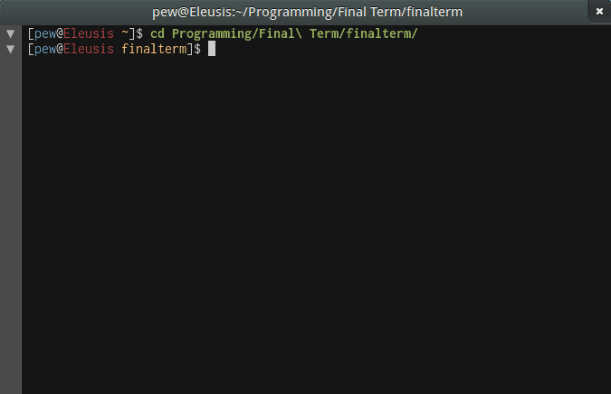

#

Commandes principales du terminal
- man
- Montre le manuel de la commande désignée
- ls
- Liste les fichiers et les sous-dossiers
- cd
- Permet de changer de répertoire
- id
- Affiche les infos utilisateur et de groupe pour un utilisateur spécifié
- mkdir
- Permet de créer un nouveau répertoire
- pwd
- Permet de savoir dans quel répertoire de l'arborescence vous êtes localisés
- mv
- Déplacer ou renommer un répertoire
- cp
- Fait une copie du fichier
- less
- Affiche le contenu du fichier directement dans le terminal
- rm
- Permet de supprimer un fichier ou un répertoire
- chown
- Permet de changer le propriétaire d'un fichier ou d'un répertoire
- chmod
- Permet de modifier les droits d'accès sur un fichier ou un répertoire
- apt-get
- Permet de gérer les paquets Debian